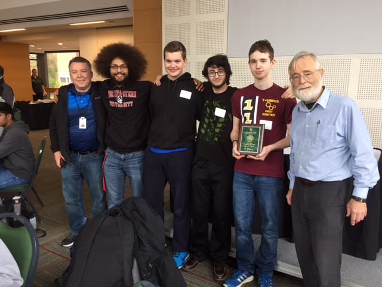

In the computer science class at Mass Academy, we make websites
(like this one), learn Java, and participate in a mobile app
development challenge.
RattleSnake
I am part of the Advanced CS track at Mass Academy. Because of my
prior experience with computer science, I tested out of the standard
class, and I can work on an interesting project instead. My project is
called RattleSnake, which is a new compiled language with roots in
Python and C++. Shown below is the code for the lexical analysis and
parsing, written in Python 3.6.
I take a RattleSnake file, like this
one, and convert the raw text into a list of tokens. This is called
lexical analysis. I then parse this list, to make an abstract syntax
tree which represents the entire program. Finally, assembly code is
generated from the tree and linked, and is run as a .exe.
Apps for Good
My group’s Apps for Good project involved the Seven Hills Switch
Choir, and is a joint project with STEM 2. The Switch Choir is an
ensemble where people with physical disabilities preventing them from
playing traditional instruments have the opportunity to play music by
activating switches. Typical switches are oversized buttons or levers,
which is suitable for some musicians but not those who lack gross
motor skills, such as those who are paralyzed. Our project was to
create an Android app that tracked the location of the musician’s
nose, and interpret that location as a musical note. It uses the
OpenCV API to track the nose, and runs at about 5 frames per second on
7 Hills’ tablet. Users are effectively able to not only compose but
record their music as well.Our app supports recording and exporting
songs natively. The simple, colorful UI maintains the user’s
attention, but also is easy comprehensible.
ACSL
Another thing I do in the Computer Science class is the American
Computer Science League Competition. Every month I compete in the
Senior League (despite being a junior), where I answer a few test
questions and one programming question. Below is my solution to the
most recent programming problem.
The question was to take a number and a length, then group the
number into groups of that length and sum those numbers. The
challenges will get more difficult later in the year.
Outside of School

Out of school, I do lots of programming. I am fluent in Python and
comfortable with Java. My favorite projects have been using machine
learning to identify handwritten digits, and a web scaper that
downloads news articles in plaintext. I also compete in picoCTF. Another competition I
participated in was the Fitchburg State University Programming
Competition. I won it in the spring of my freshman year.
 Our project was to
create an Android app that tracked the location of the musician’s
nose, and interpret that location as a musical note. It uses the
OpenCV API to track the nose, and runs at about 5 frames per second on
7 Hills’ tablet. Users are effectively able to not only compose but
record their music as well.Our app supports recording and exporting
songs natively. The simple, colorful UI maintains the user’s
attention, but also is easy comprehensible.
Our project was to
create an Android app that tracked the location of the musician’s
nose, and interpret that location as a musical note. It uses the
OpenCV API to track the nose, and runs at about 5 frames per second on
7 Hills’ tablet. Users are effectively able to not only compose but
record their music as well.Our app supports recording and exporting
songs natively. The simple, colorful UI maintains the user’s
attention, but also is easy comprehensible.